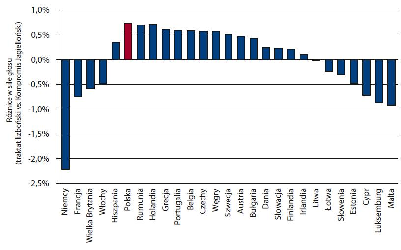

witryna Wojciecha Słomczynskiego$^*$ oraz Karola Życzkowskiego$^{**}$
$^*$ Instytut Matematyki UJ $^{**}$ Instytut Fizyki UJ
witryna Wojciecha Słomczynskiego$^*$ oraz Karola Życzkowskiego$^{**}$
$^*$ Instytut Matematyki UJ $^{**}$ Instytut Fizyki UJ
Każdy kraj otrzymuje liczbę głosów proporcjonalną do pierwiastka kwadratowego z liczby jego ludności. Decyzja Rady Unii Europejskiej zostaje podjęta, jeżeli sumaryczna waga krajów głosujących za nią przekracza próg wynoszący (dla 27 krajów Unii) 61.4% wszystkich głosów
Optymalny próg większości kwalifikowanej dobrano tak, aby siła głosu każdego państwa mierzona wskaźnikiem Penrose’a-Banzhafa była w przybliżeniu równa wadze jego głosu proporcjonalnej do pierwiastka z liczby ludności. Z prawa pierwiastkowego Penrose’a wynika wówczas, że siła głosu każdego obywatela Unii będzie wówczas taka sama. Dla Unii złożonej z $M$ państw, z ludnością odpowiednio $N_1$, $N_2$, $N_M$, próg większości kwalifikowanej wynosi: $$q=\frac{1}{2}\left( 1 + \frac{\sqrt{N_1+\ldots+N_M}}{\sqrt{N_1}+\ldots+\sqrt{N_M}} \right)$$
Jeżeli dokładna liczba ludności każdego kraju nie jest znana, można stosować wzór przybliżony, w którym wartość progu $q_*$ zależy wyłącznie od liczby $M$ państw członkowskich Unii: $$q_*=\frac{1}{2}+\frac{1}{\sqrt{\pi M}}$$
Wzór ten jest wyprowadzony przy założeniu że liczba $M$ jest stosunkowo duża, a populacje krajach członkowskich rozłożone są losowo z jednorodną miarą na sympleksie rozkładów prawdopodobieństwa. W praktyce daje dobre przybliżenie dla $M$ nie mniejszego niż 20.
Przy dalszym rozszerzeniu Unii próg ten powinien stopniowo się zmniejszać, co zapewnia stałą efektywność systemu - globalny wskaźnik Colemana określający prawdopodobieństwo utworzenia koalicji wygrywającej wyniesie około 16% niezależnie od wielkości Unii
a) Traktat z Lizbony vs Traktat z Nicei
b) Traktat z Lizbony vs Kompromis Jagielloński
Rys. 1. Porównanie siły głosu mierzonej wskaźnikiem Penrose’a–Banzhafa 27 krajów członkowskich Unii Europejskiej uporządkowanych wg ludności - dane z roku 2005
Rys. 2. Według Kompromisu Jagiellońskiego przedstawiciel danego państwa dysponuje podczas głosowania w Radzie Unii Europejskiej liczbą głosów proporcjonalną do długości boku kwadratu, którego pole odpowiada liczbie jego mieszkańców.
Rys. 3. Zależnosc siły głosu jednego obywatela wybranych państw Unii w funkcji progu większości kwalifikowanej $q$. Jeśli $q$ jest w przybliżeniu równe wartości "optymalnego progu" $q_*$ to siły głosu obywateli w każdym kraju Unii, mierzone wskaźnikiem Penrose'a-Banzhafa stają się równe.
Rys. 4. Porównanie siły głosu czterach krajów EU-27 mierzonej wskaźnikiem Penrose'a-Banzhafa: dla systemu nicejksiego (kolor niebieski), dla proponowanego Kompromisu Jagiellońskiego (kolor zielony) oraz dla Traktatu Lizbońskiego (kolor czerwony).
Tab. 1. Porównanie siły głosu 27 państw członkowskich Unii; w kolumnach: liczba ludności; siła głosu mierzona indeksem Penrose’a–Banzhafa (w %) wg traktatu z Lizbony; waga i siła głosu wg Kompromisu Jagiellońskiego z progiem q = 61,6%. Obliczenia z roku 2006.
Stwierdza, że gdy zarówno obywatele w każdym państwie, jak i poszczególne państwa głosują niezależnie od siebie, to siła głosu każdego obywatela w każdym kraju będzie taka sama, gdy siła głosu każdego państwa będzie proporcjonalna do pierwiastka z liczby jego ludności.
Próg większości kwalifikowanej, dla którego siła głosu każdego państwa mierzona wskaźnikiem Penrose’a-Banzhafa jest z dobrym przybliżeniem równa jego wadze głosu. Jego istnienie wynika z centralnego twierdzenia granicznego. Gdy waga głosu $i$-tego państwa ($i = 1, \ldots, M$) wynosi $w_i$, to optymalny próg wyraża się wzorem: $$q=\frac{1}{2}\left( 1+\sqrt{w_1^2+\ldots+w_M^2} \right)$$
W przypadku, gdy wagi $w_i$ są proporcjonalne do pierwiastków z liczby ludności $N_i$ wzór na optymalny próg przyjmuje postać: $$q=\frac{1}{2}\left(1+\frac{\sqrt{N_1+\ldots+N_M}}{\sqrt{N_1}+\ldots+\sqrt{N_M}}\right)$$
Według traktatu z Nicei, głosy ministrów w Radzie mierzone są wagami, zależnymi w pewien sposób od liczby ludności w danym kraju. Rada UE podejmuje decyzję, jeżeli spełnione sa jednoczesnie trzy warunki:
Wynik głosowania jest wiążący, jeśli spełnione są wszystkie trzy warunki, ale jak pokazała analiza matematyczna najistotniejszy jest warunek pierwszy, gdyż prawdopodobieństwo utworzenia koalicji, która spełniałaby tylko ten warunek, zaś nie spełniałaby pozostałych warunków jest znikome.
Nazywany też często systemem podwójnej większości.
Do podjęcia decyzji przez Radę UE potrzebne jest spełnienie dwóch warunków:
Dodatkowy warunek stanowi, że mniejszość blokująca musi obejmować co najmniej czterech członków Rady. Każde rozszerzenie Unii zmienia liczbę państw członkowskich oraz rozkład ludności Unii, a wiec bezpośrednio wpływa na powyższe warunki.
Jest to liczba głosów, którymi dysponuje dany uczestnik głosowania.
Najczęściej wszystkie osoby uprawnione do głosowania podczas posiedzeń różnych ciał kolegialnych posiadają po jednym głosie, czyli waga głosu każdego z nich jest taka sama.
Problem komplikuje się, gdy uczestnicy głosowania dysponują różną liczbą głosów. Taka sytuacja może mieć miejsce podczas walnego zebrania wspólnoty mieszkaniowej, gdy waga głosu jest proporcjonalna do powierzchni posiadanego lokalu. Innych przykładów dostarczają walne zebrania właścicieli spółek z ograniczoną odpowiedzialnością, na których liczba głosów zależy od liczby posiadanych udziałów, czy też walne zgromadzenia akcjonariuszy spółki akcyjnej, gdy waga głosu jest proporcjonalna do liczby posiadanych akcji.
Jest to wielkość opisująca możliwość wpływu uczestnika głosowania na decyzje podejmowaną w wyniku głosowania.
Lionel S. Penrose zdefiniował siłę głosu gracza jako prawdopodobieństwo, że w przypadkowo sformowanej koalicji jego głos jest decydujący
Uwaga: Siła głosu nie musi być proporcjonalna do wagi głosu!
Niewielka zmiana wag głosów może spowodować znaczne zmiany rozkładu siły głosów
Przykładowo, jeżeli w spółce uczestniczy dwóch współwłaścicieli, a umowa spółki stanowi, że uchwały zgromadzenia właścicieli podejmowane są bezwzględną większością głosów, to wspólnik A posiadający 51% udziałów może samodzielnie decydować o podjętych uchwałach, więc jego siła głosu wynosi 100%. Zauważmy, że siła głosu wspólnika B z 49% udziałów wynosi 0%. Jeżeli jednak B odkupił od A jedynie 2% udziałów sytuacja zmieni się diametralnie. Ten prosty przykład pokazuje też, że niewielka zmiana wag głosów może spowodować znaczne zmiany rozkładu siły głosów.
W roku 1946 angielski matematyk Lionel S. Penrose zaproponował, aby zdefiniować wskaźnik siły głosów, obliczając na ile sposobów dany uczestnik głosowania (gracz) może wchodzić z pozostałymi w koalicje, które uzyskają wymaganą większość. Wskaźnik ten wiąże się z prawdopodobieństwem, że w przykładowym głosowaniu głos danego gracza będzie decydujący. Pionierska praca Penrose'a nie została zauważona i doceniona. Dopiero gdy w roku 1965 amerykański prawnik John. F. Banzhaf przeprowadził niezależnie podobną analizę, przedstawiona metoda szacowania siły głosów stała się popularna, a odpowiednio znormalizowane wielkości zaproponowane przez Penrose'a nazwano wskaźnikami Banzhafa. Wskaźnik dla „dyktatora”, który może samodzielnie decydować o wyniku głosowania wynosi 100%, a dla uczestnika głosowania, od głosu którego wynik głosowania nie zależy równa się 0%.
Niektóre decyzje gremium liczącego $N$ głosujących wymagające znacznego poparcia zostają podjęte, jeżeli liczba głosów za danym wnioskiem jest równa lub większa od liczby $qN$, która nie musi być liczbą całkowitą. Liczba $$1/2 < q < 1$$ nazywany jest progiem większości kwalifikowanej. Najczęściej $q = 3/5, 2/3$ lub $3/4$.
Przykładowo, konklawe kardynałów wybiera papieża większością 2/3 oddanych głosów. Także niektóre decyzje Sejmu wymagają kwalifikowanej większości głosów. Do odrzucenia veta Prezydenta potrzebna jest zgoda co najmniej 3/5, zaś do zmiany Konstytucji 2/3 głosujących posłów. Najtrudniejsze jest samorozwiązanie się Sejmu, bo w tym przypadku zgodę musi wyrazić 2/3 ogółu posłów.
Jest to prawdopodobieństwo, że przypadkowo utworzona koalicja (każdy z uczestników gremium głosującego wchodzi do koalicji z prawdopodobieństwem 1/2) spełni wymagania większości kwalifikowanej i stanie się koalicją wygrywajacą , a więc będzie w stanie doprowadzić do podjęcia wiążącej decyzji.
Autor strony: Łukasz Pawela
Ostatnia edycja: 9 marca 2014